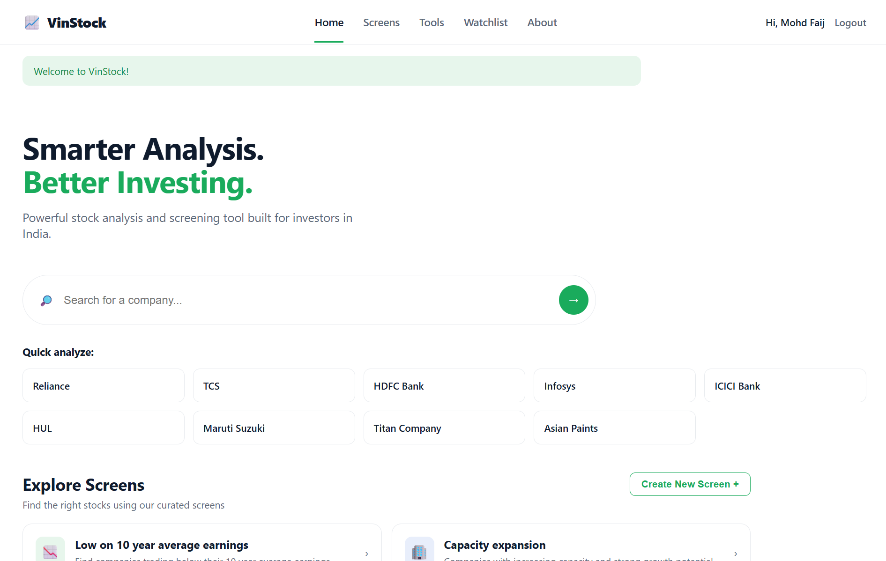
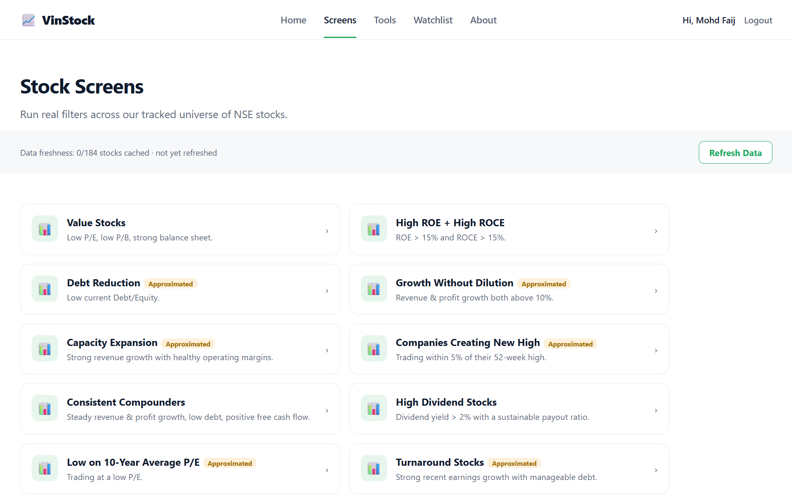
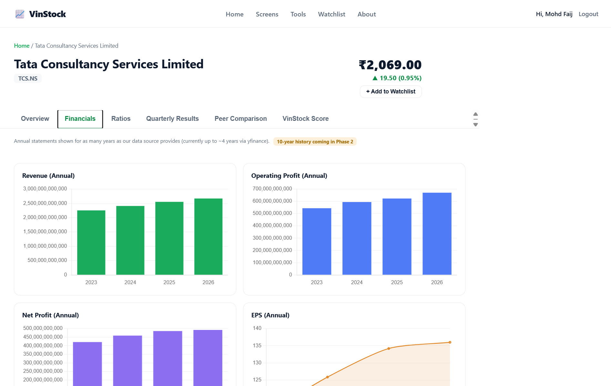
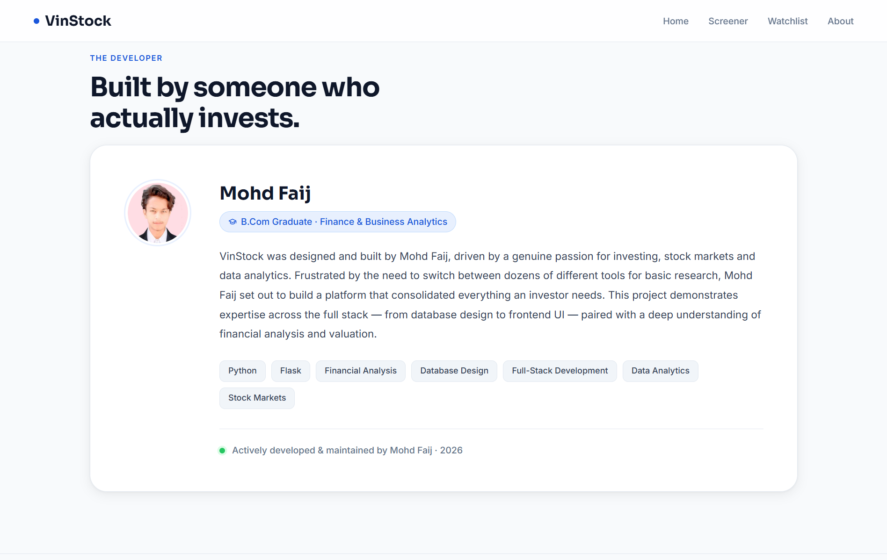

NSE Stocks Covered
Fundamental Metrics Tracked
Hand-Curated Peer Groups
Custom Screener Engine
Screener Performance
Per-User Watchlists




Frustrated by needing to switch between a dozen different tools just to check a P/E ratio, chart a 5-year revenue trend, and screen for value stocks, I set out to build a single platform that consolidates everything a retail investor actually needs — live prices, fundamentals, financial statements, a screener, and a composite scoring model — in one place.
The project was also a deliberate way to demonstrate full-stack ownership: from database and cache design, to backend API and screener logic, to a clean, usable frontend — all backed by a genuine, practical understanding of financial analysis and valuation.
Pulls live price and fundamental data for the curated NSE universe via yfinance, covering everything from EPS and Beta to 52-week highs and lows.
15+ Metrics per StockRevenue, Net Profit, Operating Profit, EBITDA, Cash Flow, Balance Sheet, Assets, Liabilities and Shareholders' Equity — surfaced directly on each stock page.
9 Statement Line ItemsInvestors can run curated screens like "Low on 10-year average earnings" or build their own — all evaluated against a refreshed cache table for speed.
Cache-Backed, Not Live-Per-RequestA composite score that summarizes financial strength across multiple fundamental indicators into a single, digestible rating for fast comparison.
Composite Financial Strength RatingSector/industry classification, business summaries, and hand-curated peer groups for ~20 major stocks to support relative valuation.
20 Curated Peer GroupsEmail + password registration and login, with full CRUD per-user watchlists so investors can track the companies they actually care about.
Full CRUD Watchlists# app/routes/screener.py — Screener route served from the fundamentals cache from flask import Blueprint, request, jsonify from app.services.screener_engine import run_screen from app.models import StockCache screener_bp = Blueprint('screener', __name__) @screener_bp.route('/api/screener/run', methods=['POST']) def run_custom_screen(): filters = request.json.get('filters', []) # Never hits yfinance directly — queries the refreshed cache table results = run_screen(StockCache.query, filters) return jsonify({ 'count': len(results), 'stocks': [r.to_dict() for r in results], 'cache_refreshed_at': StockCache.last_refresh_time() }) @screener_bp.route('/api/stock/<ticker>/score', methods=['GET']) def get_vinstock_score(ticker): from app.services.scoring import compute_vinstock_score stock = StockCache.query.filter_by(ticker=ticker).first_or_404() return jsonify(compute_vinstock_score(stock))
# jobs/refresh_cache.py — Scheduled cache refresh from yfinance import yfinance as yf import pandas as pd from app.models import StockCache, db NSE_UNIVERSE = load_curated_tickers() # ~184 stocks def refresh_fundamentals(): for ticker in NSE_UNIVERSE: info = yf.Ticker(f"{ticker}.NS").info row = StockCache.query.filter_by(ticker=ticker).first() or StockCache(ticker=ticker) row.pe_ratio = info.get('trailingPE') row.pb_ratio = info.get('priceToBook') row.roe = info.get('returnOnEquity') row.roce = compute_roce(info) row.market_cap = info.get('marketCap') row.debt_equity = info.get('debtToEquity') row.beta = info.get('beta') row.is_approximated = flag_missing_fields(info) row.last_refresh_time = pd.Timestamp.utcnow() db.session.add(row) db.session.commit() def compute_vinstock_score(stock): # Composite score across weighted fundamental indicators weights = {'roe': 0.25, 'roce': 0.25, 'debt_equity': -0.2, 'peg': -0.15, 'dividend_yield': 0.15} return round(sum(normalize(stock, k) * w for k, w in weights.items()), 2)
-- Example prebuilt screen: "Low on 10-year average earnings" SELECT ticker, company_name, pe_ratio, ten_yr_avg_eps, current_eps, is_approximated FROM stock_cache WHERE current_eps < ten_yr_avg_eps AND pe_ratio < sector_avg_pe ORDER BY pe_ratio ASC; -- Peer group comparison used on the stock detail page SELECT s.ticker, s.company_name, s.pe_ratio, s.roe, s.market_cap FROM stock_cache s JOIN peer_groups pg ON s.ticker = pg.ticker WHERE pg.group_id = ( SELECT group_id FROM peer_groups WHERE ticker = :selected_ticker ) ORDER BY s.market_cap DESC;
Grow coverage beyond the current ~184-stock curated universe toward the broader NSE-listed market, with automated tiering for smaller-cap names.
Broader Market CoverageAdd sector-relative normalization and backtested weighting to the composite score, so the rating adapts to industry-specific fundamentals.
Smarter Scoring ModelMove from hand-curated peer groups for ~20 stocks toward a semi-automated sector/industry clustering approach that scales to the full universe.
Scalable Peer AnalysisLet users save a custom screen and get notified when a new stock enters or exits the result set, turning the screener into an ongoing monitoring tool.
Proactive MonitoringExtend beyond watchlists into full portfolio tracking with cost basis, realized/unrealized gains, and portfolio-level VinStock Score aggregation.
Full Portfolio ViewExpose a read-only API over the cached fundamentals and screener engine, letting other tools or spreadsheets query VinStock's curated data directly.
Developer Access